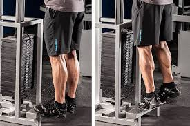
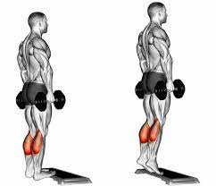

14 ejercicios para PANTORRILLAS EN CASA - YouTube
2021.06.26 19:10
 Sobre Imprensa Direitos autorais Entre em contato Criadores de conteúdo Publicidade Desenvolvedores Termos Privacidade Política e segurança Como funciona o YouTube Testar os novos recursos © 2021 Google LLC
